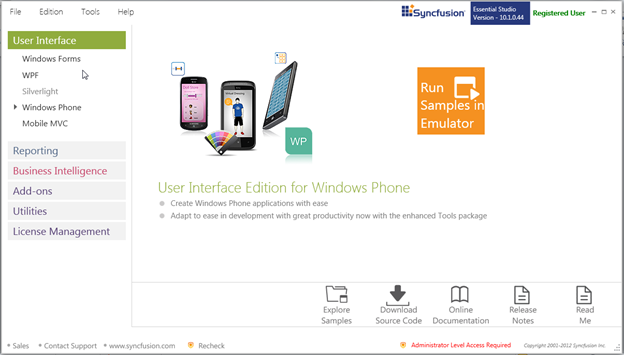

|
Event |
Description |
Arguments |
Type |
|
OnValueChanged |
This event is fired when the value of the control is changed. |
Value |
PropertyChangedCallback |
|
OnWaterMarkTextIsVisibilityChanged |
This event is fired when the WaterMarkText visibility of the control is changed. |
Visibility |
PropertyChangedCallback |
|
OnTextSelectionOnFocusChanged |
This event is fired when the text selection on focus of the control is changed. |
Bool |
PropertyChangedCallback |
Sample Link
To view Samples:
1. Click Start > All Programs > Syncfusion > Essential Studio <x.x.x.x.> > Dashboard
The Essential Studio Enterprise Edition window is displayed.

Fig 134: Essential Studio Enterprise Edition Window
2. The User Interface edition panel is displayed by default.
Select Windows Phone from the samples listed. The following options will be displayed. You can view the samples in the following three ways:
· Run Samples in Emulator—View the locally installed Tools samples for Windows Phone using the sample browser.
· Explore Samples—Locate the Windows Phone samples on the disk.
3. Click Run Samples in Emulator. The Windows Phone sample browser will be displayed as shown below.
Fig 135: Locally installed WP Samples